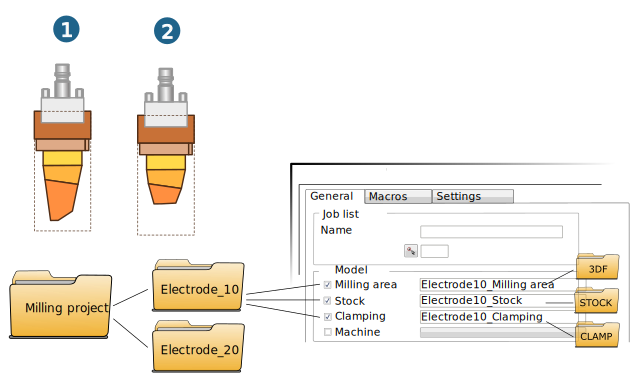

NC Programming
NC Programming is performed semi automatically. Job list, milling area, stock, fixture and electrode feature are automatically created in the → dialog on the shortcut menu of the job browser. The linking of electrode feature and job, the creation of macros and the linking of electrode features and macro are intuitively guided by the user.
Milling project directory
Define the milling project directory in the → → → dialog. The data for NC programming is saved in the milling project directory. This includes:
-
The mapped electrode(s) (1, 2):
-
Elektrode_10.hmc, in subdirectoryElektrode_10, -
Elektrode_20.hmcin subdirectoryElektrode_20.
The data is generated with the → function.
-
-
For each electrode geometry:
-
The milling area
Elektrode10_Fräsbereich, in subdirectory3DF, -
the stock
Elektrode10_Rohteilin subdirectorySTOCKand -
the clamp
Elektrode10_Spannmittelin subdirectoryCLAMP.
The data is generated by activating the hyperMILL functions Milling area, Stock and Clamp in the Electrode milling dialog.
 -
To produce electrodes, two options are offered on the Electrodes menu:
-
Use the Map and mill function to select the electrode geometry and generate a folder in the milling project directory in which the electrode is saved as a CAD file.
A new instance is started in which the selected electrode is displayed.
The Electrode milling dialog is started at the same time for NC programming.
-
With the Milling function, start the Electrode milling dialog for NC programming.
You can also start the dialog via the → shortcut menu from the hyperMILL job browser.